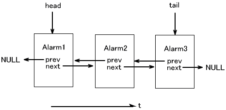
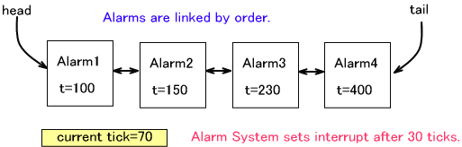
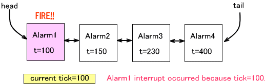
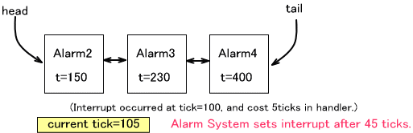

An alarm uses one of the four hardware timers to generate an interrupt at a time specified by the application. The reference unit for time is the tick used by the tick system, so that system must be operating for alarms to work properly. Since the tick system also uses a hardware timer, there are two hardware timers remaining and available to the user.
Initialization
To use the alarm system, it must be initialized by calling OS_InitAlarm()OS_InitTick()OS_InitAlarm()
To determine whether or not an alarm can be used, call OS_IsAlarmAvailable()
To free the hardware timer that was allocated to the alarm system and quit the alarm system, call OS_EndAlarm()
Setting Alarms
To set an alarm, first prepare an OSAlarm structure object. One alarm can be set for each prepared structure object. Initialize the object using OS_CreateAlarm()
Use the OS_SetAlarm()
A period alarm setting function called OS_SetPeriodicAlarm()
If an alarm cannot generate an interrupt at its specified time because another interrupt process or alarm handler is already active, the alarm handler is called as soon as interrupts can be used. This allows for delayed interrupts. When multiple alarms are delayed, they are called consecutively.
We recommend that your processes generally end the interrupt handler quickly.
Canceling Alarms
To cancel a single alarm, call OS_CancelAlarm()
To cancel all alarms, call OS_CancelAllAlarm()
Another method (described below) uses tag values to cancel groups of alarms.
About Alarm Tags
Alarms can be assigned tag values of 1 to 255. These tag values are used to cancel all alarms with a given tag.
Tag values are set to existing alarms using OS_SetAlarmTag()
To cancel all alarms with a given tag value, use OS_CancelAlarms()
Internal Data Structure
The OSAlarm alarm structures are inter-connected in a linked list according to the temporal order of the alarms.

If a given alarm structure is still connected to the list, that means its alarm has not yet gone off. Do not use this structure to set another alarm, because that will corrupt the link structure. If a structural corruption is detected, OS_Panic stops the library, regardless of the build.
Using OS_CreateAlarm() to initialize an alarm structure that is still connected to the list is also prohibited, since this can corrupt the link structure and cause unstable behavior.
Handling Multiple Alarms
Even though the alarm system only uses one timer, the application can set multiple alarms simultaneously. This is possible because the alarm system maintains an internal list of alarms arranged in chronological order, starting with the alarm that is set to go off the soonest. The alarm system follows this list to conduct the alarm process, using the hardware timer on only one alarm at a time. Once the process for one alarm ends, the system repeats the process on the next alarm in the list.
In the example below, four alarms have been set. The current time (the present tick value) is 70, and the alarm that is set to go off the soonest is Alarm1. The alarm system is set to generate a timer interrupt for Alarm1 after another 30 ticks elapse.

When the time reaches 100, the timer interrupt for Alarm1 is triggered and the alarm handler is called.

When this process ends the next alarm is set. The alarm process for Alarm1 ends at tick 105, and the list says Alarm2 should go off at tick 150, so the alarm system is set to generate a timer interrupt for Alarm2 after another 45 ticks elapse.

The process is repeated for the other alarms in the list in turn.
Canceling and Resetting Alarms Inside the Alarm Handler
Below are explanations of the circumstances surrounding the process of alarms canceling and resetting themselves inside the alarm handler.
1. A normal one-time alarm canceling its own alarm with an alarm handler
Since an alarm is generated at the time the alarm handler is called, there is no need for self-canceling and this action has no meaning.
2. A normal one-time alarm canceling its own alarm with an alarm handler
The alarm structure OSAlarm for that alarm has already been removed from the list, so the alarm can be reset. Cancellation is not necessary.
3. A periodic alarm canceling its own alarm with an alarm handler
Periodic alarms can cancel their own alarms with alarm handlers.
4. A periodic alarm resetting itself using an alarm handler
After canceling once, it is possible to set a new alarm using that alarm object.
Use of Hardware Timers
The alarm system uses timer 1. This timer cannot be used by the application. The OS timer functions are checked in a debug build by SDK_ASSERT.
03/08/2005 Standardized the Japanese term for "interrupt"
11/05/2004 Initial version
CONFIDENTIAL